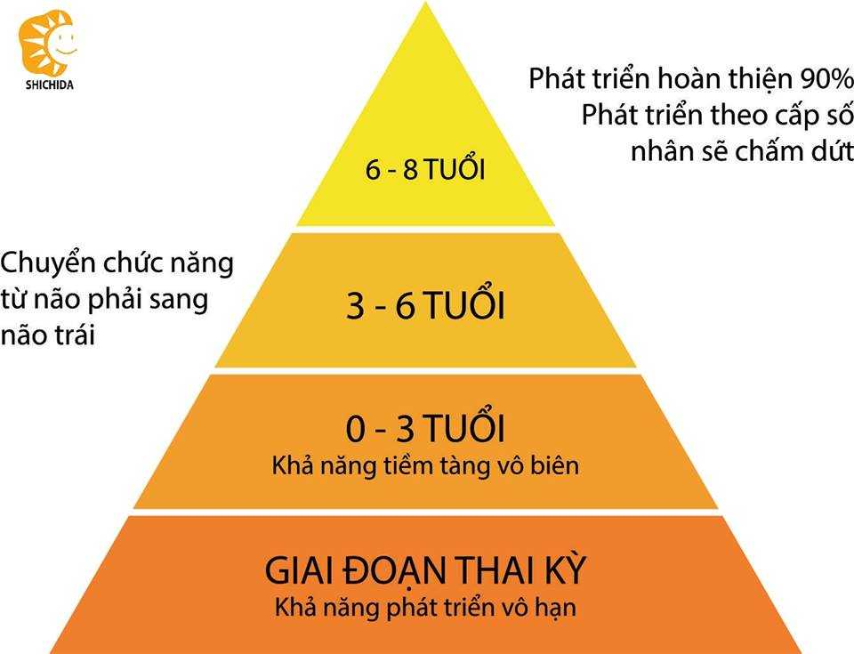

TỔNG QUAN VỀ "GIÁO DỤC SỚM"
Chắc hẳn có rất nhiều ông bố, bà mẹ đã không còn xa lạ với thuật ngữ “Giáo dục sớm” trong quá trình tìm kiếm phương pháp giáo dục tốt nhất cho các em bé đáng yêu của mình, Mẹ Kiwi sẽ chia sẻ đầy đủ và súc tích nhất về khái niệm, nguyên lý, mục đích, nguyên tắc,… của “Giáo dục sớm” trong bài dưới đây. Hi vọng sẽ mang đến cái nhìn tổng quan nhất cho các bố mẹ.
1. “Giáo dục sớm” là gì?
Giáo dục sớm (GDS): là phương pháp giáo dục cho trẻ từ 0 đến 6 hoặc 8 tuổi bằng cách khích thích chức năng của não bộ phát triển trong thời kỳ sinh trưởng của não.
2. Mục đích của việc “giáo dục sớm” là gì?
Mẹ Kiwi đã áp dụng GDS cho Kiwi từ khi còn trong bụng (Thai giáo), thậm trí là nghĩ đến con và tâm niệm về những gì mẹ có thể làm cho Kiwi từ rất lâu trước khi có bầu. Mục đích của Mẹ Kiwi không phải là để biến con mình trở thành thiên tài hay thần đồng mà là để hiện thực hóa tình yêu của mẹ với con qua việc việc nuôi dạy con từ sớm, hiểu con, làm bạn với con, phát huy tối đa những khả năng và tố chất của con, giúp có nền tảng vững chắc về sức khỏe, trí tuệ, nhân cách và sau này vững bước trong cuộc đời, an nhiên, vui vẻ.
3. Nguyên lý của “giáo dục sớm” như thế nào?
Theo thuyết tài năng thuyên giảm và phát triển của não trẻ, 6 năm đầu tiên của bé có thể được chia ra làm 4 giai đoạn như sau:
-Giai đoạn thai kỳ: là thời điểm các tế bào thần kinh được hình thành. Ở giai đoạn này các tế bào thần kinh sẽ phát triển bùng nổ với số lượng cực lớn. GDS trong giai đoạn này giúp tăng số lượng tế bào thần kinh của bào thai trong bụng mẹ, giúp não bộ phát triển một cách tối ưu.
-Giai đoạn 0-3 tuổi: Do cơ chế tự cắt tỉa của não bộ nên những kết nối thần kinh nào được tác động sẽ được giữ lại còn những kết nối nào không được tác động đến sẽ mất đi. GDS tạo ra các xúc tác phong phú giúp các kết nối thần kinh được tác động liên tục, giữ lại tối đa các kết nối sẵn có và tăng cường các kết nối thần kinh, tạo ra các cửa sổ cơ hội để trẻ phát triển toàn diện.
-Giai đoạn 3-6 tuổi: Não trái sẽ phát triển, GDS giúp tăng cường sự kết nối giữa bán cầu não phải và bán cầu não trái. GDS còn đóng vai trò quan trọng trong sự hình thành tính cách của trẻ, là nền tẳng để phát triển nhân cách, đạo đức và lối sống của trẻ sau này.
4. Nguyên tắc của “giáo dục sớm”
Để áp dụng thành công GDS cho bất kỳ em bé nào thì các bố mẹ cũng cần tuân thủ các nguyên tắc vàng sau, để GDS đạt kết quả tốt nhất và tạo ra niềm vui, hạnh phúc trong chính mỗi gia đình.
- Bắt đầu càng sớm càng tốt: đừng ngần ngại mà chờ đợi để mất đi thời gian quý báu của bạn và con bạn. Hãy GDS cho con càng sớm càng tốt, từ những điều tự nhiên, đơn giản và trân thành nhất như trò chuyện, chơi với con, ôm con…. và thể hiện tình yêu thương vô bờ bến của bạn.
- Luôn cổ vũ, khích lệ, động viên trẻ: Hãy nhớ rằng con bạn chưa từng làm bất kỳ việc gì trước đây, tất cả những gì con làm đều là lần đầu, nên hãy bỏ những kỳ vọng hay so sánh sang một bên, tận hưởng từng khoảng khắc bên con và vui vẻ làm những gì con và bạn đều thích, quá trình quan trọng hơn kết quả nên hãy luôn khen ngợi khi con đã cố gắng trong suốt quá trình nhé.
- Luôn vui vẻ, tự nhiên và tự phát: Đừng gò bó vào bất kỳ khuôn khổ hay chuẩn mực nào. Khi GDS điều quan trọng nhất là tâm lý yêu thích khám phá của trẻ. Hãy làm theo cảm hứng để cả mình và trẻ thăng hoa, tìm hiểu sâu để dạy những gì trẻ thích.
- Học trong cuộc sống: Khám phá cuộc sống luôn là đề tài khiến trẻ ham mê và yêu thích nhất, còn trần trừ gì nữa mà bạn và con không cùng khám phá cuộc sống muôn màu, những điều đơn giản nhất đôi khi lại là những điều kỳ diệu nhất trong mắt con trẻ. Gắn liền mọi bài học vào cuộc sống là cách thực hành kiến thức tốt nhất và cho trẻ nhiều trải nghiệm chân thực nhất.
- Không kiểm tra: Không kiểm tra ngay khi bạn vừa dạy con một kiến thức nào đó mà hãy cho trẻ được thực hành qua các trò chơi và áp dụng vào cuộc sống kiến thức đó. Như vậy những kiến thức sẽ được ghi nhớ tự nhiên và chính trẻ sẽ khai thác kiến thức đó theo nhu cầu của trẻ.
- Không ép buộc hay đe dọa trẻ học: Mọi em bé đều thích được chơi, khám phá và trải nghiệm nhưng khi trẻ ốm, buồn ngủ, căng thẳng hay lo lắng thì dạy trẻ sẽ phản tác dụng, trẻ không những không tiếp thu mà còn sinh ra tâm lý lo sợ, phản kháng. Hãy bắt đầu khi trẻ thoải mái nhất, thực sự muốn khám phá và bố mẹ hãy kích thích sự tò mò của con để tạo hứng thú cho trẻ.
- Dừng lại trước khi trẻ muốn dừng: Đây là nguyên tắc quan trọng nhất và cũng khó nhất khi GDS cho trẻ. Dừng lại đúng lúc sẽ vẫn thỏa mãn được nhu cầu khám phá và niềm vui của trẻ mà không làm mất đi sự tò mò, hứng khởi trong những hoạt động tiếp theo. Mỗi em bé lại có những khả năng, sở thích, sở trường riêng và thời gian tập trung khác nhau nên các bố mẹ hãy quan sát và tôn trọng con để giúp con kéo dài thời gian tập trung, khám phá sâu hoạt động mà không bị nhàm chán nhé ạ.
Mẹ Kiwi sẽ cụ thể các nguyên tắc qua từng hoạt động bằng các clip để các bố mẹ hiểu rõ hơn và áp dụng dễ hơn nhé. Nắm chắc các nguyên tắc đảm bảo các bố mẹ có GDS bằng phương pháp nào đi chăng nữa thì cũng sẽ thành công
5. Một số phương pháp giáo dục sớm:
Hiện nay có rất nhiều các phương pháp GDS của các quốc gia phát triển trên thế giới đã được nhiều bố mẹ áp dụng thành công:
– Phương pháp 0 tuổi - Trung Quốc
– Giáo dục sớm theo phương pháp Glenn Doman
– Phương pháp giáo dục Shichida – Nhật Bản
– Phương pháp Montessori - Ý
– Người Do thái
...
Mỗi phương pháp đều có ưu điểm và nhược điểm riêng, các bố mẹ cần tìm hiểu thật kỹ từng phương pháp trước khi áp dụng cho con mình. Mẹ Kiwi thấy mỗi phương pháp đều rất hay và chú trọng những yếu tố riêng, nhưng trong điều kiện một gia đình bình thường ở Việt Nam và muốn Kiwi được giáo dục trong môi trường văn hóa của người Việt Nam nên Mẹ Kiwi đã kết hợp các phương pháp và thay đổi một chút cho phú hợp với đại đa số gia đình Việt Nam để vẫn lĩnh hội được những ưu tú trong các phương pháp giáo dục sớm mà không làm mất đi bản sắc văn hóa.
Nội dung GDS là tất cả những gì bé có thể học được từ 0-6 tuổi, rất rộng và phong phú. Nhưng để các bố mẹ dễ thực hiện và có hệ thống Mẹ Kiwi sẽ chia làm 6 nội dung chính: Ngôn ngữ và Nhận thức; Toán học và Logic; Vận động; Khoa học; Âm nhạc và Nghệ thuật; Kỹ năng sống. Trong từng phần sẽ có những hoạt động và bài học cụ thể được xây dựng từ dễ đến khó, từ cơ bản đến mở rộng. Các clip hướng dẫn đều là hoạt động trực tiếp mẹ và Kiwi cùng thực hiện sẽ giúp các bố mẹ có ví dụ trực quan và dễ thực hành với các con yêu ở nhà hơn nhé.
Mong rằng chia sẻ trên đây của Mẹ Kiwi đã giúp các bố mẹ hiểu hơn phần nào về GDS và tự tin để bước cùng con khám phá mọi điều trong cuộc sống.